Background
In this hands-on lab, you'll create a Process App to automate updating subscription usage data in Oracle Engagement Cloud Subscription Management.
This lab is a continuation of a companion lab where you create an integration used by the Process App in this lab. If you've completed the integration lab, feel free to use the integration you created. If you have not completed the integration lab, don't worry, a completed integration has been made available for you to use.
The business scenario is to create a self-service Subscription Management application that allows subscribers of a good or service to self report subscription usage. Once subscription usage data is reported, the application will automate the review and approval of that data, and if approved, automate updating Oracle Engagement Cloud Subscription Management with the usage data. This scenario represents a common business process where requests are made, reviewed, approved, and result in updates to an enterprise application. Digitizing and automating these types of business processes can transform how your organization operates and delivers customer value.
What is a Process App?
A Process App orchestrates the activities necessary to execute an end-to-end business process. These activities are digital representations of the individual business process steps and include examples such a user's request that initiates a business process, automated decision services that define business process policies, tasks to engage business process stakeholders responsible for decisions and work, and integrations to interact with enterprise applications relevant to the business process.
This lab will highlight several key benfits of Oracle Integration Process:
- Automate end-to-end business processes that touch multiple stakeholders including requestors and decision makers.
- Engage stakeholders where most effective, whether that be through self-service portals, dedicated task lists, actionalble emails, digial assistants, mobile apps, or SaaS applications.
- Automate manual repetitive tasks by leveraging application integrations.
Use Case
Before You Begin
Some steps in this tutorial have a  icon next to them. Click this
icon to copy the snippet of text to your clipboard and then paste where needed.
icon next to them. Click this
icon to copy the snippet of text to your clipboard and then paste where needed.
Your instructor will provide you the information you need to access the environments used in this lab.
For this lab we will provide you the following:
- Oracle Integration
- Engagement Cloud
Get Your Oracle Integration (OIC) Environment
Select your OIC Environment and enter your User Number to get the information needed to access Oracle Integration.
- OIC URL:
- OIC User Name:
- OIC Password: Your password will be provided by the instructor.
Sign In
-
Open your Oracle Integration instance.
Enter your user name and password.
Your password will be provided by the instructor.Click Sign In.
The Home page appears.
You are now logged in and ready to use Oracle Integration.

Create a Process App
Oracle Integration Process simplifies the effort and skillsets required to create Process Apps that digitize and automate end-to-end business processes. We will create our Process App from a QuickStart App that provides us a good starting point.
What is a QuickStart App?
A QuickStart App a ready to run Process App with all the implementation details included for you to configure, test, and activate the application. QuickStart Apps can be designed to include a set of configuration options and constraints defined by the QuickStart App author. The QuickStart App author can optionally allow the QuickStart App to be completely customized beyond the configuration constraints they defined. In short, a QuickStart App is a template to create, configure, and customize a fully functioning Process App. This allows users to rapildly create ready to run Process Apps that can be tailored to their specific needs.
From the Home page’s Navigation menu, select Processes, and then select Process Applications.
This is where you create Process Apps. Depending on previous activity in your environment you may already have some Process Apps listed. If you do, just ignore them, we will create our own.
- Click Create.
- Hover over the Start with a QuickStart box, and then click Browse.
Locate the Subscription Management QuickStart, and click Create.
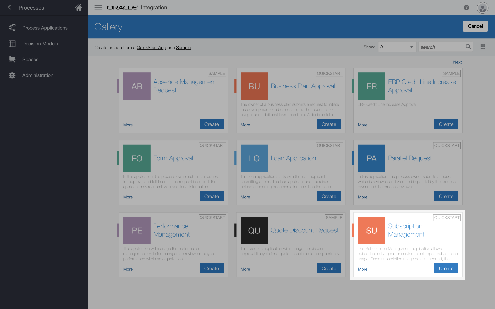-
In the Create Application dialog, in the Name field, enter:
My Subscription ManagementThe Name uniquely identifies your Process App. Since you are working on a shared environment, it is important to use the name assigned to you to avoid conflicting with others who are also working on this lab.
Click Create.
The QuickStart App appears.
Notice how the options in this design mode are limited to Configure, Test, and Activate. This provides a simplified interface to quicky get Process Apps up and running.
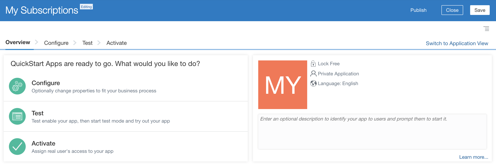
You have successfully created a Process App using a QuickStart App. In the next section we will configure our new application.
Configure a QuickStart
The Subscription Management Process App you just created comes ready to run but lacks some core functionality required by the business scenario. You will make the necessary modifications to complete this Process App.
We'll start by examining how a QuickStart App author can define specific configuration options that can be tailored with little understanding of the underlying Process App assets.
First, when it's time to run your Process App, you will need to be able to identify your application from your classmates. We will use QuickStart App configuration to uniquely identify your Process App with your user number.
Second, the Process App contains two email notification activities that will send an email to the subscriber when their usage data has either been accepted or rejected. The Process App is configured to use a temporary email address. We will use QuickStart configuration to update the send To email field for both of these email notification activities with your email address. Of course in a real solution we would use the email address associated with the logged in user however, since you are using a training account we will specify this through QuickStart App configuration.
From the QuickStart Overview page, click Configure.
The QuickStart Configure page appears.
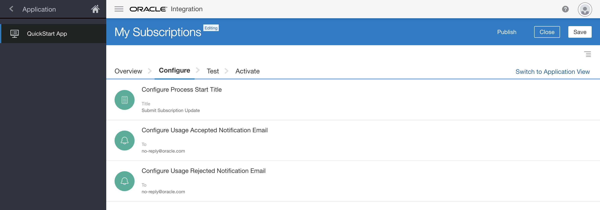Click the Configure Process Start Title configuration option to open the configuration editor.
The configuration editor appears.
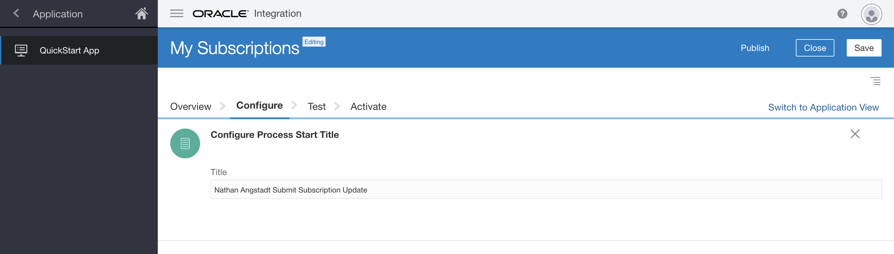Replace the Title text with:
Submit Subscription UpdateRemember this name for later, when you run the Process App.
Click
 to close the configuration editor.
to close the configuration editor.The QuickStart Configure page appears.
Click the Configure Usage Accepted Notification Email configuration option to open the configuration editor.
The configuration editor appears.
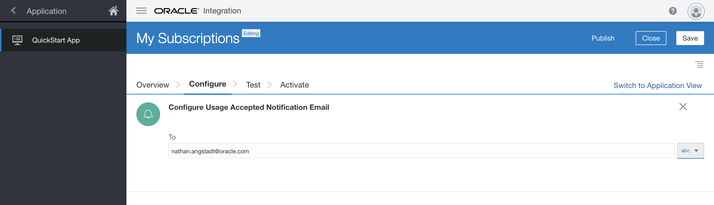- Replace the temporary email address in the send To email field with your email address.
Click
to close the configuration editor.The QuickStart Configure page appears.
- Make the same change to the Configure Usage Rejected Notification Email configuration option.
Click Publish to publish your changes. Enter a comment in the Publish Application dialog to note your changes and click Publish.
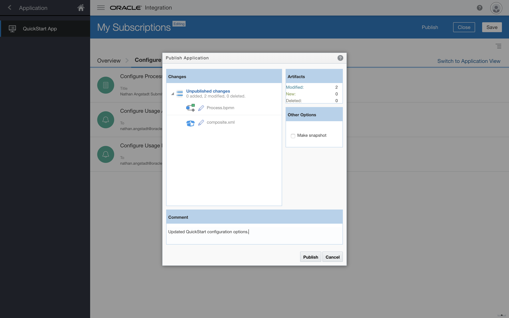
You have completed the QuickStart App configurations. In the next section we will expose the underlying Process App assets and make some more extensive customizations.
Review the Process App
The QuickStart App View provides a simplified interface to quickly configure and activate a Process App. But the changes you can make are limited to what the QuickStart App author defined. Switching to the Application View exposes all of the underlying Process App assets and gives you full access to completely customize the application.
On the QuickStart App page, click the Switch to Application View link.

The Process Composer page appears.
Once in Application View, the left side navigation pane displays the various asset types that make up a Process App. By default, the Processes asset type is selected. This Process App contains a single Process. We will open this Process and review it's structure.
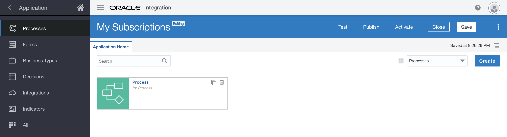
With the Processes navigation item selected, click the Process asset to open it in the structured process editor.
The Process Canvas page appears.
The process flow defines the structure and flow of each step within the end-to-end business process. Review the structure and flow of this process:
- Submit Subscription Update Form Start activity
- Approve Subscription Update Approve activity
- Approved? Gateway activity
- Update Subscription Submit activity
- Accepted and Rejected Data Notification activities
- Completed End Event activity.
Explore the other types of activites availble from the BPMN pallette.
Be Careful not to make any changes just yet!
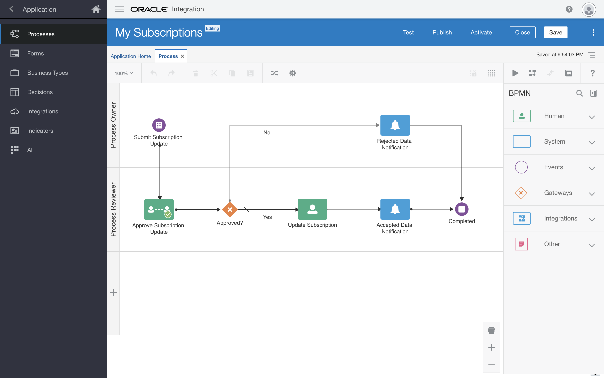
Edit a Web Form
We have already started a web form for your user to submit their subscription usage data. In this section, you’ll add two controls to the form that allow the user to select the subscription and product that they are reporting on. Of course, we will want that list of subscriptions and products to come directly from Oracle Engagement Cloud.
- Click the purple Start activity titled Submit Subscription Update.
Click
 and select Open Form.
and select Open Form.The form editor appears. It contains a central canvas, a side pane for setting properties for selected controls, and a side palette pane with basic and advanced controls you can add to the form.
Add a Select control to the form. We will use this control to select the subscription.
Drag and drop a Select control from the Basic Palette to the top of the form.
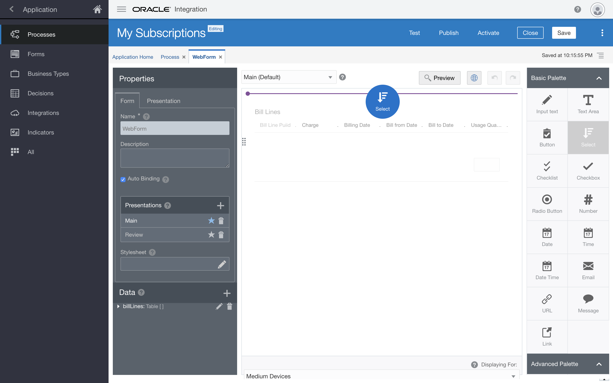
Select the control you just added.
Notice how the left Properties pane changes. When you select a control, the Properties pane displays the control properties. When you click outside of a control, the Properties pane displays the underlying form properties.
- In the Properties pane, locate the General tab.
-
In the Name field, enter
SubscriptionNumber.The control name will be used to identify the control throughout the process. As you add controls to the form, the process automatically generates an underlying data model for these controls.
- In the Label field, enter
Subscription.
Add another Select control to the form. We will use this control to select the product.
Drag and drop a Select control from the Basic Palette and place it just under the Subscription Select control.
- Select the control you just added.
- In the Properties pane, locate the General tab.
- in the Name field, enter
SubscriptionProductPUID. In the Label field, enter
Product.
-
Click the Preview button to see the new fields in your form.
They don't do much yet, but we will fix that next.
- Click to close the preview.
Discover Integrations
To connect your form to a live system of record, such as Oracle Engagement Cloud, we will use integrations that have been created for us.
- From the Navigation menu, select Integrations.
- Click Link to an Integration, and then select Browse available integrations.
-
In the Use an Integration dialog, search for and select the
Subscription Managementintegration, then click Create.You have now imported an integration with several operations that you can use in your Process App.
Note that you did not need to have any technical understanding of how these integrations were created. You were able to simply discover them and import them for use in your project.
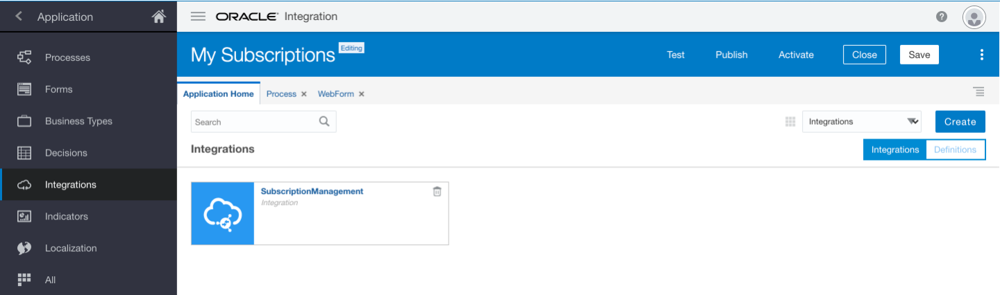
Using Integrations
Next let's configure our web form subscription and product controls to use this integration.
Configure the list of Subscriptions
Let’s configure the Subscription Select control to retrieve a list of Subscriptions.
- Select the WebForm tab to display the form editor.
- On the form canvas, select the Subscription control.
- In the Properties pane, scroll down until you see the Options Source section, and select Connector.
- From the Connector list, select SubscriptionManagement.
- From the Resource list, select /subscriptions.
- From the Operation list, select getSubscriptions.
-
In the Response section, in the List to Filter field, select
response.items. - In the Label Binding field, select
displayName. In the Value Binding field, select
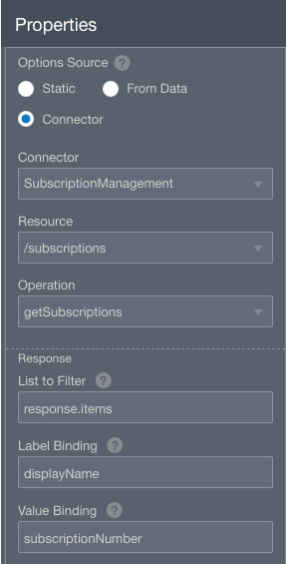subscriptionNumber.- Click Preview.
- Click the Subscription control and verify a list of subscriptions from Engagement Cloud.
- Click to close the preview.
Configure the list of Products
Let’s configure the Product Select control to retrieve a list of Products.
Engagement Cloud Products are dependent on a Subscription. So our Products control will need to depend on the selected Subscription.
- On the Form canvas, select the Product control.
- In the Properties pane, scroll down until you see the Options Source section, and select Connector.
- From the Connector list, select SubscriptionManagement.
- From the Resource list, select /subscriptionProducts.
- From the Operation list, select getSubscriptionProducts.
- In the Template Parameters section, from the SubscriptionNumber field, select Control value.
-
From the field next to SubscriptionNumber, select SubscriptionNumber.
Remember, our list of products is dependent on the selected subscription. The integration exposes a subscriptionNumber parameter and will only return products for the supplied subscription. By selecting Control value and the name of our Subscription Select control (SubscriptionNumber), we have configured the Product Select control to get the value from the Subscription control and pass that to the integration.
- In the Response section, in the List to Filter field, select
response.items. - In the Label Binding field, select
displayName. - In the Value Binding field, select
subscriptionProductPuid. - Click Preview.
Click the Product control and note that no producs are listed. We still need to do a little more work to connect the Subscription and Product controls.
- Click to close the preview.
Connect the Subscription and Product controls
- On the form canvas, select the Product control.
- In the Properties pane, select Skip Upon Load.
There is no need to execute the get products integration before we have selected a subscription.
- Scroll up and select the Hide attribute.
It will be a cleaner experience if we do not show the products control until we are ready to use it.
- On the Form canvas, select the Subscription control.
In the Properties pane, scroll down until you find the Events section.
Click
 .
.From the list next to the Event Name field, select On Change.
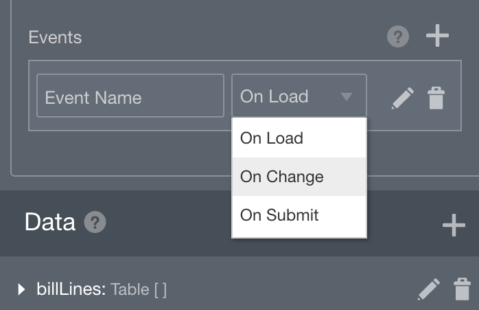Click
 to display the Expression Editor dialog.
to display the Expression Editor dialog.The On Change dialog appears.
Add an action to get the list of products when the user selects a subscription:
- Click + Action.
- From the Control Name list, select SubscriptionProductPUID.
- From the Action list, select Refresh Connector.
When we select a subscription, the Change Event will fire and this action will force the product control to call the get products integration with the selected subscription value.
Add an action to show the Product control:
- Click + Action.
- From the Control Name list, select SubscriptionProductPUID.
- From the Action list, select Show.
- Click OK.
Let's preview the behavior you just added to the form controls:
- On the Form canvas, click Preview.
From the Subscription control, search for and select the subscription assigned to you:
- From the Product control, search for and select the product that has been assigned to you:
Product - - Click to close the preview.
Configure the Bill Lines Table
The final thing we need to do in our web form is to display the Bill Lines for the selected Product. We will do this in the pre-configured Bill Lines table.
- On the Form canvas, select the Bill Lines table control.
- In the Properties pane, scroll down until you see the Use Data from Connector option, and check the option.
- From the Connector list, select SubscriptionManagement.
- From the Resource, select subscriptionProductsBillLines.
- From the Operation list, select getSubscriptionProductsBillLines.
- In the Template Parameters section, from the SubscriptionProductPuid field, select Control value.
-
From the field next to SubscriptionProductPuid, select SubscriptionProductPUID.
Bill Lines are dependent on the selected product and as we did before with the Product connector, we are simply telling the connector where to get the selected product value to pass to the integration.
- In the Response section, in the List to Filter field, select
response.items. - It's possible some of the next fields that are used to bind the integration response to the table fields will automatically populate.
Ensure you have the following fields defined:
- In the BillLinePuid field, select
billLinePuid. - In the Charge field, select
invoiceText. - In the BillingDate field, select
dateToInterface. - In the BillFromDate field, select
dateBilledFrom. - In the UsageQuantity field, select
usageQuantity.
- In the BillLinePuid field, select
Connect the Product and Bill Lines controls
- On the form canvas, select the Bill Lines table control.
- In the Properties pane, select Skip Upon Load.
Again, there is no need to execute the get bill lines integration before we have selected a product.
- Scroll up and select the Hide attribute.
It will be a cleaner experience if we do not show the Bill Lines table control until we are ready to use it.
- On the Form canvas, select the Product control.
We are going to do the same thing as before, but this time have the Product Change Event update the Bill Lines table control.
In the Properties pane, scroll down until you find the Events section.
Click
.From the list next to the Event Name field, select On Change.
Click
to display the Expression Editor dialog.The On Change dialog appears.
Add an action to get the list of bill lines when the user selects a product:
- Click + Action.
- From the Control Name list, select BillLines.
- From the Action list, select Refresh Connector.
Add an action to show the Bill Lines table control:
- Click + Action.
- From the Control Name list, select BillLines.
- From the Action list, select Show.
- Click OK.
Let's preview the behavior you just added to the table control:
- On the Form canvas, click Preview.
From the Subscription control, search for and select the subscription assigned to you:
- From the Product control, search for and select the product that has been assigned to you:
Product - -
The Bill Lines table should load with the bill lines for the selected product.
- Click to close the preview.
Automate a Manual Task
Now that we have a web form for users to enter their subscription usage information, we want to automate getting this data into Oracle Engagement Cloud. If you completed the companion Integration lab, you have already created an integration to update bill lines in Engagement Cloud and we will use that here. If you did not complete the integration lab, we have provided a completed integration for you to use.
Automate a Human Task with an Integration
- From the Navigation menu, select Integrations and then select the Application Home tab.
- On the Application Home tab, click Create.
- Select Use an Integration.
-
In the Use an Integration dialog, search for and select the
Update Bill Linesintegration, then click Create.Feel free to use the integration you created.
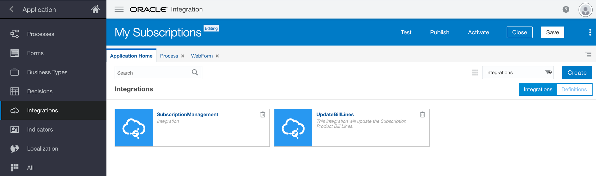If you completed the integration lab, the name of your integration is likely
Update Bill Lines. - Select the Process tab to display the process editor.
- Select the Update Subscription human task and click 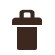.
- From the BPMN palette, expand the Integrations category.
Your Update Bill Lines integration has been added to the BPMN paleltte.
- Drag and drop the UpdateBillLines integration to the same position on the flow as the deleted human task. 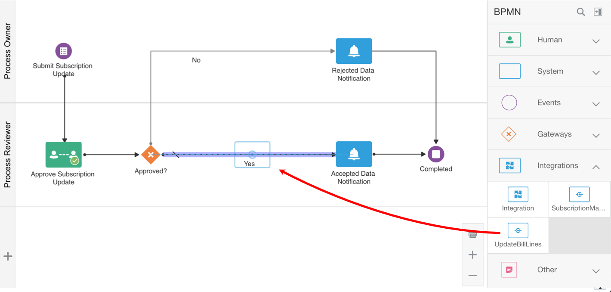
Configure the Integration’s Input
Now that we our using our integration in our process flow, we need to tell it where to get the bill lines data.
- Select the Update bill lines integration activity.
- Click .
Select Open Data Association.
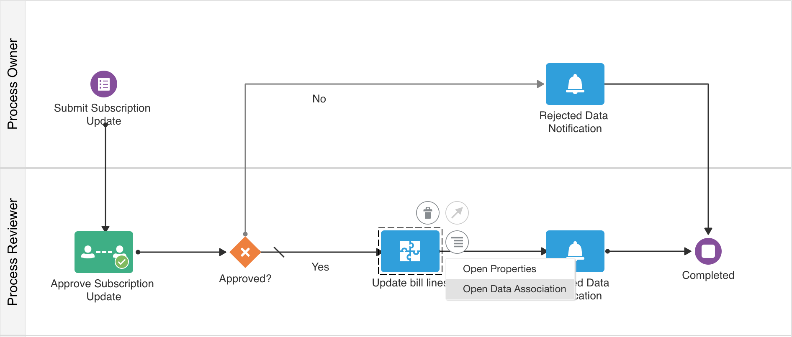On the Data Association page, click in the top middle of the mapper.
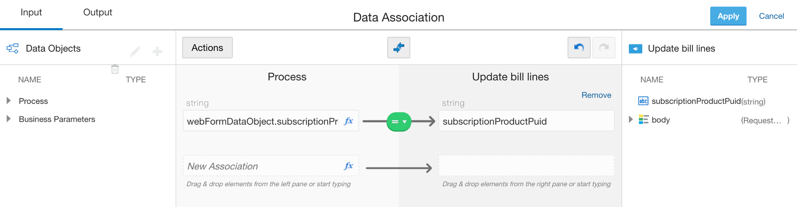This action automatically maps the web form product control to the integration product parameter:
- Process.Data Object.webFormDataObject.subscriptionProductPUID ⟶ subscriptionProductPuid
- Since the auto mapper does not understand the relationship between the web form Bill Lines table and the bill lines parameter in the integration body, you will need to perform this mapping manually:
- In the Data Objects tree, expand Process.
- Expand Data Object.
- Expand webFormDataObject.
- Drag and drop billLines to the New Association field in the Process section.
- In the Update bill lines tree, expand body.
Drag and drop billLines to the blank field in the Update bill lines section.
The data association icon turns red and an error is displayed indicating that the two data items cannot be mapped as is.
We need to create a transformation between the two data items:
- Click 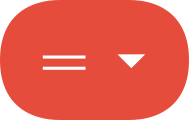.
Select Transform.
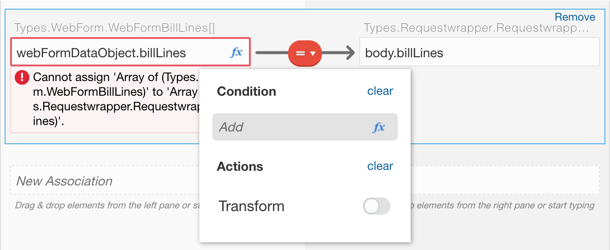The Transformation dialog appears.
Click Create.
The Transform dialog appears.
- In the Transformation dialog, enter
Bill Line. Click Create.
The Data Association page changes to the Transform page.
-
On the Data Association page, click in the top middle of the mapper.
This action automatically maps the WebFormBillLines data item to the RequestwrapperBillLines data item:
- billLinePuid ⟶ billLinePUID
- usageQuantity ⟶ usageQuantity
- Click Save.
You exit the Transform page and return to the Data Association page.
The transformation we just created now allows the Bill Lines table and the bill lines parameter in the integration body to be mapped.
We could create a new process data object to hold the integration response and map those in the data association output, but since we won't be using that response, we'll skip this step.
- Click Apply to complete the data association and return to the process flow canvas.
Test the Process Application
We are done with our Process App. Let’s give it a try.
Click Publish.
Enter a comment and click Publish
Click Test, then click Activate.
The process validation is giving us a warning that we did not map our Update bill lines response. We won't be using this, so we'll ignore the warning.
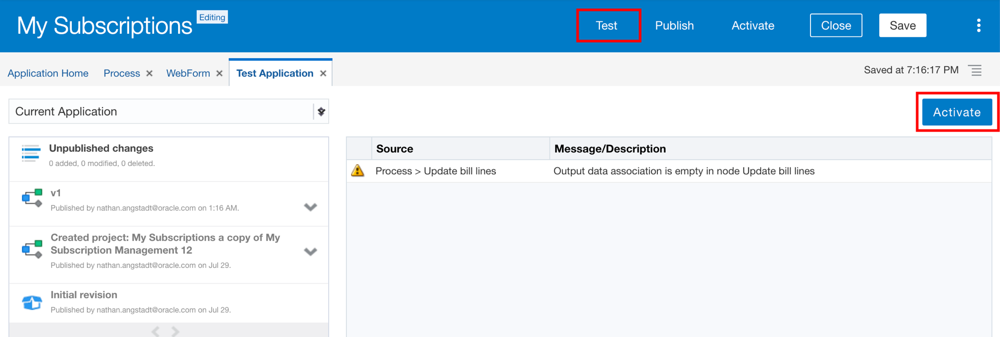In the Activate to Test dialog, ensure that Add Me to All Roles is selected, and click Activate.
A confirmation message informs you that the application was successfully activated.
- Click OK.
Click Try in Test Mode.
The My Apps page appears in a new tab in your web browser.
-
In the Search field, enter:
Submit Subscription Update - Select your Process App.
The process start form appears.
Typically, this form would be hosted in a customer portal where the customer can self-report their usage. The customer would select the subscription and products that they want to report. They would then enter the usage data.
From the Subscription control, search for and select the subscription assigned to you:
- From the Product control, search for and select the product that has been assigned to you:
Product -Since you are working on a shared environment, it is important to use the Subscription and Product assigned to you to avoid conflicting with others who are also working on this lab.
- In the Bill Lines table, update the Usage Quantity fields of your choice.
Click Submit.
The request to accept this usage data has now been submitted. In our simple process flow, this request is routed for approval. Since you are perfoming both the customer and approver role, you now get to approve the request you just submitted.- From the Navigation menu, select My Tasks.
Select the approval task assigned to your user.
Approve Subscription Update fromNotice the quantities you entererd when you submitted the form. Your task now is to approve these changes.
Click APPROVE.
The process flow will call the Update Bill Lines integration and update the product bill lines in Oracle Engagement Cloud with the usage quantity changes you requested.
- While we aren't giving you access to the Engagement Cloud environment for this lab, rest assured, you are updating a live system. To verify your changes were updated, go back to My Apps and select your Process App. Enter the same subscription and product as you did before, and you should see the bill lines now contain your updates.
Congratulations!
Congratulations! You have completed your Process App.